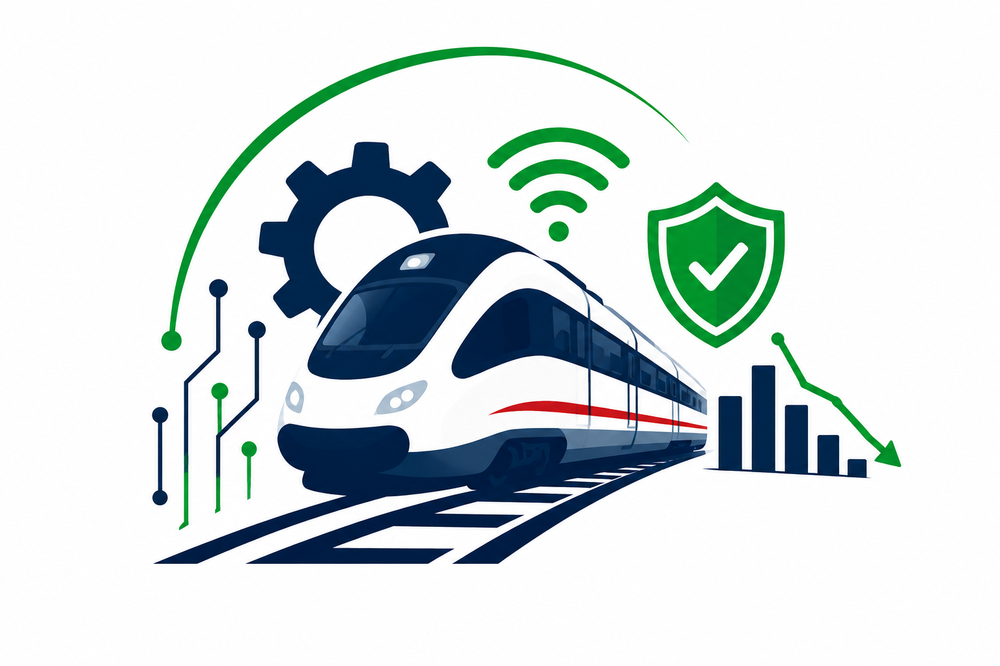
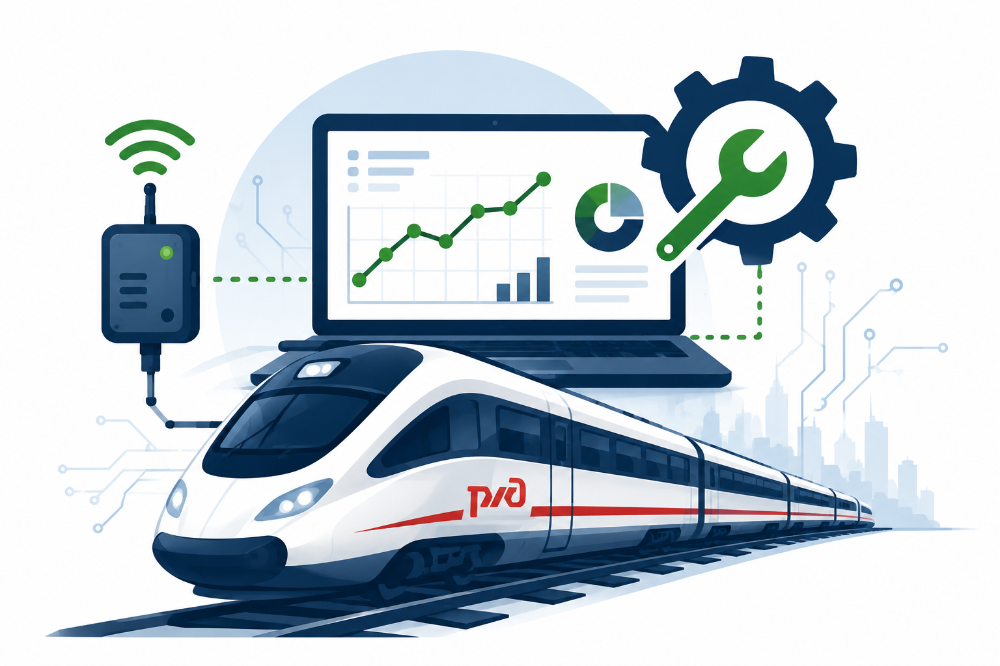
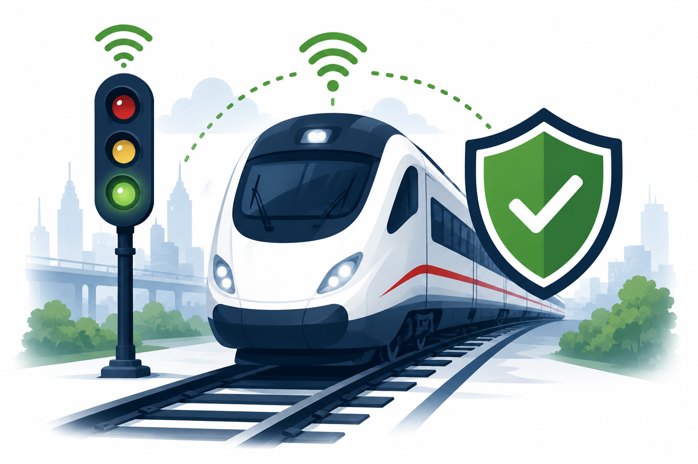

Интернет вещей позволяет получать данные о работе инфраструктуры и подвижного состава в режиме реального времени.
Это помогает принимать решения быстрее и эффективнее.
Цифровые технологии становятся основой развития железнодорожной отрасли России.

Системы IoT позволяют выявлять возможные неисправности оборудования до возникновения аварий.

Датчики и автоматизированные системы контроля снижают риск возникновения чрезвычайных ситуаций.
Оптимизация обслуживания инфраструктуры и техники позволяет сократить эксплуатационные расходы.